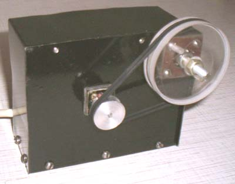
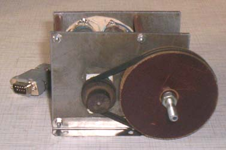
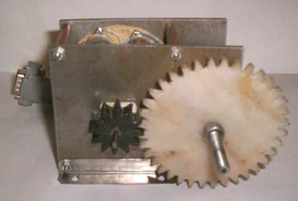

Трехфазный шаговый
двигатель-редуктор
Вариант 1

Характеристики:
- напряжение питания системы управления (СУ) шаговым
двигателем (ШД) 12 В, потребляемый ток не более 700 мА (в режиме полушага)
- время работы не ограничено, в том числе с заторможенным
валом
- максимальная частота вращения вала ШД 180 об/мин
- габариты не более: 140 х 100 х 110 (с осью редуктора) мм3
- исполнение закрытое
- масса не более 1.5 кг
Вариант 2


Характеристики:
- напряжение питания СУ ШД 12 В, потребляемый ток не более
500 мА (в режиме полушага)
- время работы не ограничено, в том числе с заторможенным
валом
- максимальная частота вращения вала ШД 240 об/мин
- габариты не более: 120 х 80 х 120 (с осью редуктора) мм3
- исполнение открытое
- масса не более 1 кг
Конструкция двигателя-редуктора
Приводом в двигателе-редукторе служит ШД на кольцевом
постоянном магните [2]. Двигатель-редуктор состоит из двух стальных
прямоугольных пластин, скрепленных между собой и играющих роль статора ШД. На
одной из пластин крепятся шесть цилиндрических катушек с сердечниками. Сверху
статор может быть закрыт кожухом. Вал ШД с кольцевым постоянным магнитом и ось
редуктора, соединенные ременной или зубчатой передачей с понижающим
коэффициентом, зависящим от отношения диаметров шкивов или числа зубьев
шестерен, устанавливаются в узлы на шариковых подшипниках. ШД может работать в
различных режимах, предпочтительным является трехфазный режим полушага.
Система управления
Для работы двигателя-редуктора может быть использована система
управления ШД на PIC-контроллере [4].
Двигатель-редуктор имеет простую конструкцию и может
использоваться в качестве привода, когда не требуются большие скорости вращения
и высокая точность позиционирования, например, в шаровой микромельнице [3].
Ссылки:
- Кенио Т. Шаговые двигатели и их микропроцессорные системы
управления: Пер. с англ. - М.: Энергоатомиздат, 1987. - 200 с.: ил.
- Шаговый двигатель на
кольцевом постоянном магните (8 полюсов, 6 фаз, угол шага 15 градусов) с
системой управления
- Шаровая
микромельница
- Электронная
система управления шаговыми двигателями на PIC-контроллере
Словарь
терминов:
- Двигатель (мотор)
- преобразователь энергии источника в механическую энергию движения.
- Максимальная выходная частота вращения шагового
двигателя - максимальная шаговая частота вращения, при которой
ненагруженный шаговый двигатель может двигаться без пропуска шагов.
- Максимальная частота приемистости шагового
двигателя - максимальная управляющая частота, при которой
ненагруженный шаговый двигатель может запускаться и останавливаться без
пропуска шагов.
- Многополюсный магнит - постоянный
магнит, имеющий более одной пары полюсов.
- Полушаговый режим работы шагового двигателя
- комбинация однофазного и двухфазного режима управления обмотками
шагового двигателя, когда сначала при наличии тока в исходной обмотке
включается соседняя по фазе обмотка, а затем через заданное время
отключается ток в исходной обмотке.
- Пошаговый режим работы шагового двигателя
- однофазный или двухфазный режим управления обмотками шагового
двигателя, когда обмотки включаются через заданное время последовательно
поодиночке или по две сразу.
- Привод - устройство, имеющее рабочий
орган, способный к механическому перемещению при наличии противодействующей
силы.
- Редуктор - преобразователь скорости
механического движения.
- Трехфазная последовательность импульсов
- три идентичных периодических последовательности импульсов, сдвинутых
друг относительно друга на 120 градусов по фазе.
- Трехфазный шаговый двигатель - шаговый
двигатель, имеющий три группы обмоток (фаз).
- Угол шага шагового двигателя - угол, на
который поворачивается вал шагового двигателя при выполнении одной операции
полного переключения тока между двумя соседними по фазе обмотками.
- Частота вращения
- количество оборотов в единицу времени.
- Шаговый двигатель
- электрический двигатель, полезное механическое перемещение которого
совершается скачкообразно из одного промежуточного положения в другое.
16.10.2006
21.03.2007
01.11.2009
Альтернативные источники
энергии
Компьютеры и
Интернет
Магнитные поля
Механотронные системы
Перспективные
разработки
Электроника и
технология
Главная страница